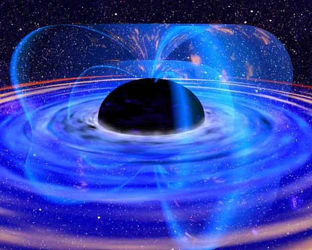

6.-Futuro de la Tierra
Introducción:
Investigación:
En el simulador inferior puedes comprobar cómo un planeta se convierte en estrella. Observa bien todos los datos y procesos que aparecen en ella. Si los interpretas de forma adecuada podrás resolver muchas de las cuestiones que plantearemos más adelante ¡¡Suerte!!
Para realizar la investigación con éxito es importante que recuerdes algunos datos de la tabla periódica:
- H representa hidrógeno. Es un átomo formado por un electrón y un protón.
- He representa helio. Es un átomo formado por dos electrones y dos protones.
1- ¿Por qué el Sol es una estrella y Júpiter no, teniendo ambos astros una composición mayoritaria de hidrógeno? Razona la respuesta.
2- ¿Qué combustible utiliza el Sol para brillar? ¿Cómo es la reacción que ocurre en su interior para producir luz?
3- ¿Crees que la composición del Sol varía con el tiempo? Razona la respuesta .
Ya has averiguado por qué brilla el Sol, falta saber si va a brillar siempre. ¿Tú qué crees? Ahora que sabes cómo funciona y qué combustible utiliza ¿Crees que dejará de brilla algún día? Observa el simulador inferior e investiga que nos depara el futuro.
4- En su fase final el Sol aumentará de volumen ¿Sabes cómo se le llama a esa fase?
5- Observa atentamente el simulador ¿Por qué crees que aumenta el volumen de la estrella al final?
6.-Recopila información sobre el final que le espera a la Tierra originado por la evolución del Sol. Analiza qué procesos irán ocurriendo y cómo afectará la humanidad (si es que en ese tiempo aún existe).
Para saber más
¿Qué es un agujero negro?

Un agujero negro es un cuerpo celeste tan denso, con tanta capacidad de atracción hacia él, que ni la luz escapa de su fuerza gravitatoria.
Su origen tiene lugar cuando tras una explosión de una estrella masiva en una Supernova, la estrella resultante entra en colapso ante su enorme masa concentrada en un pequeño volumen: Se forma una Estrella de Neutrones, cuya elevadísima gravedad puede contraerla hasta formar un punto de dimensiones minúsculas con una gravedad casi infinita, tanto que incluso atrae la luz. Se trata de un Agujero negro. Cualquier objeto que se acerque a el queda atrapado sin poder salir.
Los agujeros negros sólo son "visibles" porque emiten Rayos X. Se supone que hay agujeros negros en el centro de cada Galaxia.
Reflexión
Comprueba tus conocimientos sobre el universo y sistema solar con este juego de repaso. Pincha en la imagen para acceder al juego por equipos.